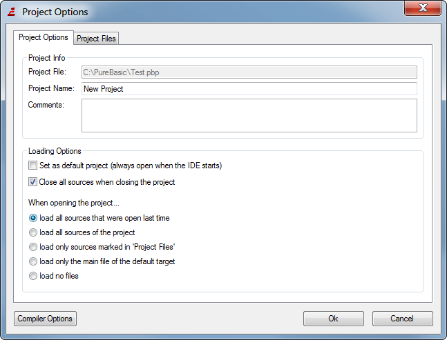

Managing projects
The IDE comes with features to easily handle larger projects. These features are
completely optional. Programs can be created and compiled without making use of the
project management. However, once a program consists of a number of source code
and maybe other related files, it can be simpler to handle them all in one project.
Project management overview
A project allows the management of multiple source codes and other related files in one place
with quick access to the files through the project tool.
Source files included in a project can be scanned for AutoComplete even if they are not currently
open in the IDE. This way functions, constants, variables etc. from the entire project can be
used with AutoComplete. The project can also remember the source files that are open when the project
is closed and reopen them the next time to continue working exactly where you left off.
Furthermore, a project keeps all the compiler settings in one place (the project file) and
even allows to manage multiple "compile targets" per project. A compile target is just a set
of compiler options. This way multiple versions of the same program, or multiple smaller programs
in one project can be easily compiled at once.
To compile a project from a script or makefile, the IDE provides command-line options to compile
a project without opening a user interface. See the section on command-line options
for more details.
All filenames and paths in a project are stored relative to the project file which allows a project
to be easily moved to another location as long as the relative directory structure remains intact.
The Project menu

New Project
Creates a new project. If there is a project open at the time it will be closed. The project options
window will be opened where the project filename has to be specified and the project can be configured.
Open Project
Opens an existing project. If there is a project open at the time it will be closed.
Previously open source codes of the project will be opened as well, depending on the project configuration.
Recent Projects
This submenu shows a list of recently opened project files. Selecting one of the entries opens this project.
Close Project
Closes the currently open project. The settings will be saved and the currently open source files of the
project will be closed, depending on the project configuration.
Project Options
Opens the project options window. See below for more information.
Add File to Project
Adds the currently active source code to the current project. Files belonging to the project are marked with
a ">" in the file panel.
Remove File from Project
Removes the currently active source from the current project.
Open Project folder
Opens the folder that contains the project file in whatever file manager is available on the system.
The project options window
The project options window is the central configuration for the project. The general project settings
as well as the settings for the individual files in the project can me made here.

The following settings can be made on the "Project Options" tab:
Project File
Shows the filename of the project file. This can only be changed during project creation.
Project Name
The name of the project. This name is displayed in the IDE title bar and in the "Recent Projects" menu.
Comments
This field allows to add some comments to the project. They will be displayed in the project info tab.
Set as default project
The default project will be loaded on every start of the IDE. Only one project can be the default
project at a time. If there is no default project, the IDE will load the project that was open
when the IDE was closed last time if there was one.
Close all sources when closing the project
If enabled, all sources that belong to the project will be closed automatically when the project is closed.
When opening the project...
load all sources that where open last time
When the project is opened, all the sources that were open when the project was closed will be opened again.
load all sources of the project
When the project is opened, all (source-)files of the project will be opened.
load only sources marked in 'Project Files'
When the project is opened, only the files that are marked in the 'Project Files' tab will be opened. This way you
can start a session always with this set of files open.
load only the main file of the default target
When the project is opened, the main file of the default target will be opened too.
load no files
No source files are opened when the project is opened.
The "Project Files" tabs shows the list of files in the project on the right and allows changing their settings.
The explorer on the left is for the selection of new files to be added.
The buttons on the top have the following function:
Add
Add the selected file(s) in the explorer to the project.
Remove
Remove the selected files in the file list from the project.
New
Shows a file requester to select a filename for a new source file to create. The new file will
be created, opened in the IDE and also added to the project.
Open
Shows a file requester to select an existing file to open. The file will be opened in the IDE and added to the project.
View
Opens the selected file(s) in the file list in the IDE or if they are binary files in the FileViewer.
The checkboxes on the bottom specify the options for the files in the project. They can be applied to a single file
or to multiple files at once by selecting the files and changing the state of the checkboxes. The settings have the
following meaning:
Load file when opening the project
Files with this option will be loaded when the project is open and the "load only sources marked in 'Project Files'"
option is specified on the "Project Options" tab.
Display a warning if file changed
When the project is closed, the IDE will calculate a checksum of all files that have this option set and display
a warning if the file has been modified when the project is opened the next time. This allows to be notified when
a file that is shared between multiple projects has been edited while working on another project.
This option should be disabled for large data files to speed up project loading and saving, or for files which
are changed frequently to avoid getting a warning every time the project is opened.
Scan file for AutoComplete
Files with this option will be scanned for AutoComplete data even when they are not currently loaded in the IDE.
This option is on by default for all non-binary files. It should be turned off for all files that do not contain
source code as well as for any files where you do not want the items to turn up in the AutoComplete list.
Show file in Project panel
Files with this option will be displayed in the project side-panel. If the project has many files it may make sense
to hide some of them from the panel to have a better overview and faster access to the important files in the project.
The project overview
When a project is open, the first tab of the file panel shows an overview of the project and its files.
Project Info
This section shows some general info about the project, such as the project filename, its comments
or when and where the project was last opened.
Project Files
This section shows all files in the project and their settings from the Project Options window.
Double-clicking on one of the files opens the file in the IDE. Right-clicking displays a context menu
with further options:

Open - Open the file in the IDE.
Open in FileViewer - Open the file in the FileViewer of the IDE.
Open in Explorer - Open the file in the operating systems file manager.
Add File to Project - Add a new file to the project.
Remove File from Project - Remove the selected file(s) from the project.
Refresh AutoComplete data - Rescan the file for AutoComplete items.
Project Targets
This section shows all compile targets in the project and some of their settings.
Double-clicking on one of the targets opens this target in the compiler options.
Right-clicking on one of the targets displays a context menu with further options:
Edit target - Open the target in the compiler options.
Set as default target - Set this target as the default target.
Enable in 'Build all Targets' - Include this target in the 'Build all Targets' compiler menu option.
The project panel
There is a sidepanel tool which allows quick access to the files belonging to the project. For more information
see the built-in tools section.